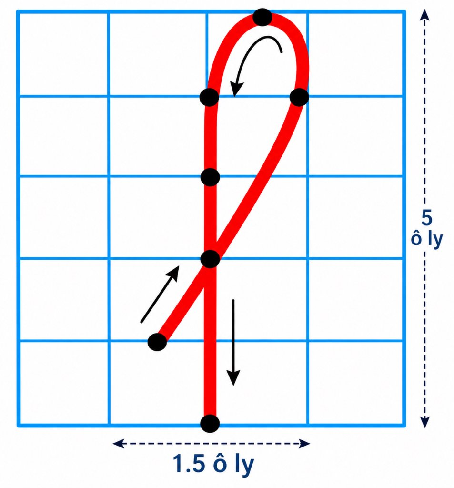

So sánh đối chiếu 100% từng ô ly với ảnh mẫu giáo trình chuẩn

• Chiều cao tổng: Đúng 5 ô ly (từ đường kẻ đậm Dòng 1 lên chạm đỉnh Dòng kẻ 6).
• Độ rộng tổng: Đúng 1.5 ô ly (từ điểm đặt bút đến mép ngoài vòm khuyết).
• Điểm đặt bút: Nằm trên Dòng kẻ 2, giữa ô ly thứ 2 (cách thân nét 0.5 ô ly).
• Điểm giao nhau: Cắt thân nét thẳng đứng chính xác tại Dòng kẻ 3.
• Vòm trên đỉnh: Uốn cong tròn chạm đỉnh Dòng kẻ 6 tại giữa ô ly thứ 3 (cách thân nét 0.5 ô ly).
• Thân nét: Thẳng đứng tắp 90 độ dọc theo đường kẻ dọc từ Dòng 5 xuống Dòng 1 (KHÔNG nghiêng, KHÔNG méo).
• Điểm dừng bút: Dừng bút trên đường kẻ đậm Dòng 1, ngay trên trục thân nét.